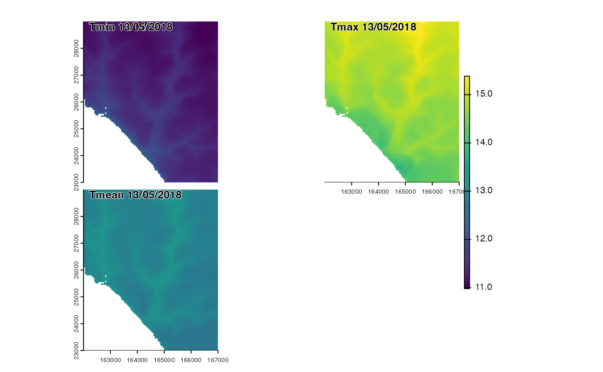

Downscales daily coarse-resolution temperature stats accounting for elevation effects and optionally cold air drainage and coastal effects
Usage
tempdaily_downscale(
climdata,
tmean = NA,
sst = NA,
dtmf,
dtmm,
basins,
uzf,
cad = TRUE,
coastal = TRUE,
thgto = 2,
whgto = 2
)Arguments
- climdata
a
climdatamodel object containing climate data of the same format asera5climdataExpects variables to include atminandtmax- tmean
a coarse resolution array or spatRaster of daily mean temperatures identical to climdata inputs. If NA will calculate from hourluy downscaling of tmin and tmax in
climdata- sst
a SpatRast of sea-surface temperature data (deg C) timeseries that overlaps climdata$tme
- dtmf
a high-resolution SpatRast of elevations
- dtmm
a medium-resolution SpatRast of elevations covering a larger area than dtmf (only needed for coastal effects - see details).
- basins
optionally, a fine-resolution SpatRast of basins as returned by
basindelin()matching the coordinate reference system and extent ofdtmf. Calculated if not supplied.- uzf
optionally, a SpatRast of fine resolution wind speeds as returned by
winddownscale(). Calculated if not supplied.- cad
optional logical indicating whether to calculate cold-air drainage effects
- coastal
optional logical indicating whether to calculate coastal effects
- thgto
height above ground of output temperature measurements.
- whgto
height above ground of output wind speed measurements. to resolution of
dtmf.- tempvar
string name of element of climdata holding temperature data (ie 'temp','tmax','tmin')
Value
a list of three multi-layer SpatRasters of downscaled daily minimum, maximum and mean temperatures (deg C) matching the resolution of dtmf.
Details
Cold air drainage is calculated by delineating hydrological basins and
calculating flow accumulation and the elevation difference from the highest point of the basin.
Cold-air drainage is assumed to occur when atmospheric stability is high, namely when
the radiation balance is negative and wind speeds are low. Coastal effects are
calculated by determining the ratio of land to sea pixels in an upwind direction.
The provision of dtmm allows this ratio to be derived accoutning for land and
sea outside the boundaries of the study area.
Examples
climdata<-read_climdata(mesoclim::ukcpinput)
dtmf<-rast(system.file("extdata/dtms/dtmf.tif",package="mesoclim"))
dtmm<-rast(system.file("extdata/dtms/dtmm.tif",package="mesoclim"))
basins<-basindelin(dtmf, boundary = 2)
wsf<-winddownscale(climdata$windspeed, climdata$winddir, dtmf, dtmm, climdata$dtm, zi=climdata$windheight_m)
#> [1] 1000 1000
dailytemps<-tempdaily_downscale(climdata,NA,unwrap(mesoclim::ukcp18sst),dtmf,dtmm,basins,wsf,cad = TRUE,coastal = TRUE,2,2)
panel(c(dailytemps$tmin[[13]],dailytemps$tmax[[13]],dailytemps$tmean[[13]]),main=paste(c("Tmin","Tmax","Tmean"),"13/05/2018"))
